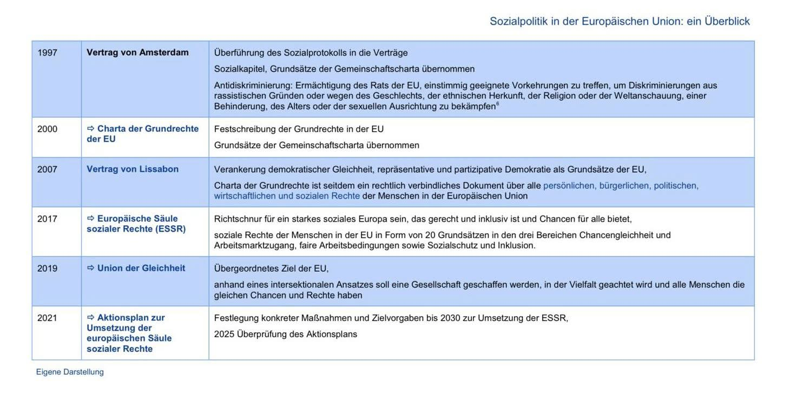
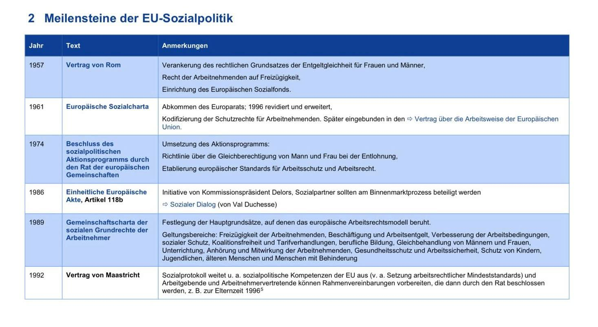

Umsetzung der Sozialpolitik
- Die EU setzt Sozialpolitik nicht nur über einzelne Gesetze um, sondern auch über Verträge, Grundrechte und Leitlinien.
- Ziel ist, soziale Rechte in allen Mitgliedstaaten zu stärken, auch wenn die nationale Sozialpolitik weiterhin eine wichtige Rolle spielt.
- Wichtige Themen sind Gleichberechtigung, Arbeitsschutz, soziale Sicherheit, Bildung, Gesundheit und Inklusion.
- Die Umsetzung geschieht schrittweise: erst wurden Grundrechte festgelegt, später wurden sie in Verträge und Programme übernommen.
Wichtige Stationen
- 1957 Vertrag von Rom:Entstehung zentraler Grundlagen wie Entgeltgleichheit, Arbeitnehmerfreizügigkeit und Europäischer Sozialfonds.
- 1961 Europäische Sozialcharta:Schutzrechte für Arbeitnehmende wurden festgeschrieben.
- 1997 Vertrag von Amsterdam:Sozialpolitik und Antidiskriminierung wurden stärker in die EU-Verträge integriert.
- 2000 Charta der Grundrechte der EU: Soziale und persönliche Rechte wurden verbindlicher festgehalten.
- 2017 Europäische Säule sozialer Rechte: 20 Grundsätze für Chancengleichheit, faire Arbeitsbedingungen und sozialen Schutz.
- 2021 Aktionsplan: Konkrete Ziele und Maßnahmen zur Umsetzung bis 2030.

